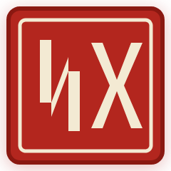

Scene 03 // Continuous Handscroll
The Monumental Stat Punchline
verified
Imperial Chop Verified
Hold Cadence
3.50s Invariance
Regnal Epoch
MMXXVI • TIANJIE
Wire-To-Decision
840ns
Direct kernel bypass ASIC pipeline with deterministic L1 memory bus locking.
Acoustic Cue
notifications_active
Deep Bronze Bell
432Hz reverberation decay followed by heavy boxwood chop strike.
Formal Proof Inscribed
99.999%

NX Seal Imperial
Deterministic Invariance Guaranteed
“Zero unmatched fills across 1,400,000,000 continuous orders during peak multi-exchange liquidity dislocations. Invariance certified via hardware state registers.”
Frequency Jitter
±0.00ps
Rubidium-stabilized quartz clock locking with atomic network synchrony.
Archival Reel
FOLIO 03
Cinnabar • Raw Silk
Master imperial roll calibration #F3EAD3 against cinnabar vermilion #B3261E.
Scene 01: Inception
→
Scene 02: Architecture
→
Scene 03: The Monumental Stat
→
Scene 04: Terminal Access
•
Clearance: 42% Active Negative Space